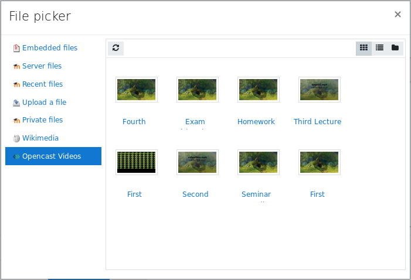

Opencast repository plugin
The plugin allows teachers, to embed Opencast videos into a course. The repository displays all videos, that belong to the Opencast series, that are connected to the course. The repository is only available within a text editor and will paste the URL to the resource into the content. This URL will later be replaced via a Moodle filter, to show an embedded player. The repository works best in combination with the Opencast filter plugin. The filter will replace the link with an iFrame, which displays the Paella player.

Installation
The Opencast repository plugin is available from GitHub as well as from the Moodle plugins directory.
Requirements
- tool_opencast
- Recommended: block_opencast
- Optional: filter_opencast
Configuration
The configuration of the Opencast repository plugin is documented in the settings page.